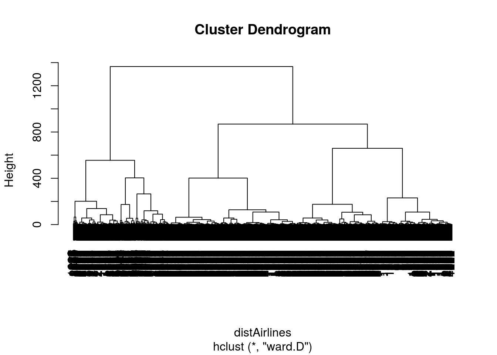

Market segmentation is a strategy that divides a broad target market of customers into smaller, more similar groups, and then designs a marketing strategy specifically for each group. Clustering is a common technique for market segmentation since it automatically finds similar groups given a dataset.
In this analysis, I’ll see how clustering can be used to find similar groups of customers who belong to an airline’s frequent flyer program. The airline is trying to learn more about its customers so that it can target different customer segments with different types of mileage offers.
The file AirlinesCluster.csv contains information on 3,999 members of the frequent flyer program. This data comes from the textbook Data Mining for Business Intelligence, by Galit Shmueli, Nitin R. Patel, and Peter C. Bruce. For more information, see the website for the book.
There are seven different variables in the dataset, described below:
- Balance = number of miles eligible for award travel
- QualMiles = number of miles qualifying for TopFlight status
- BonusMiles = number of miles earned from non-flight bonus transactions in the past 12 months
- BonusTrans = number of non-flight bonus transactions in the past 12 months
- FlightMiles = number of flight miles in the past 12 months
- FlightTrans = number of flight transactions in the past 12 months
- DaysSinceEnroll = number of days since enrolled in the frequent flyer program
Problem 1.1 - Normalizing the Data
Read the dataset AirlinesCluster.csv into R and call it “airlines”.
airlines <- read.csv("AirlinesCluster.csv")Looking at the summary of airlines, which TWO variables have (on average) the smallest values?
summary(airlines) Balance QualMiles BonusMiles BonusTrans
Min. : 0 Min. : 0.0 Min. : 0 Min. : 0.0
1st Qu.: 18528 1st Qu.: 0.0 1st Qu.: 1250 1st Qu.: 3.0
Median : 43097 Median : 0.0 Median : 7171 Median :12.0
Mean : 73601 Mean : 144.1 Mean : 17145 Mean :11.6
3rd Qu.: 92404 3rd Qu.: 0.0 3rd Qu.: 23800 3rd Qu.:17.0
Max. :1704838 Max. :11148.0 Max. :263685 Max. :86.0
FlightMiles FlightTrans DaysSinceEnroll
Min. : 0.0 Min. : 0.000 Min. : 2
1st Qu.: 0.0 1st Qu.: 0.000 1st Qu.:2330
Median : 0.0 Median : 0.000 Median :4096
Mean : 460.1 Mean : 1.374 Mean :4119
3rd Qu.: 311.0 3rd Qu.: 1.000 3rd Qu.:5790
Max. :30817.0 Max. :53.000 Max. :8296 BonusTrans and FlightTrans
Problem 1.2 - Normalizing the Data
In this problem, we will normalize our data before we run the clustering algorithms.
Why is it important to normalize the data before clustering? #### If we don’t normalize the data, the clustering will be dominated by the variables that are on a larger scale.
Problem 1.3 - Normalizing the Data
Let’s go ahead and normalize our data. You can normalize the variables in a dataframe by using the preProcess function in the “caret” package.
Now, create a normalized dataframe called “airlinesNorm” by running the following code:
preproc <- preProcess(airlines)
airlinesNorm <- predict(preproc, airlines)The first code pre-processes the data, and the second code performs the normalization. If you look at the summary of airlinesNorm, you should see that all of the variables now have mean zero. You can also see that each of the variables has standard deviation 1 by using the sd() function.
summary(airlinesNorm) Balance QualMiles BonusMiles BonusTrans
Min. :-0.7303 Min. :-0.1863 Min. :-0.7099 Min. :-1.20805
1st Qu.:-0.5465 1st Qu.:-0.1863 1st Qu.:-0.6581 1st Qu.:-0.89568
Median :-0.3027 Median :-0.1863 Median :-0.4130 Median : 0.04145
Mean : 0.0000 Mean : 0.0000 Mean : 0.0000 Mean : 0.00000
3rd Qu.: 0.1866 3rd Qu.:-0.1863 3rd Qu.: 0.2756 3rd Qu.: 0.56208
Max. :16.1868 Max. :14.2231 Max. :10.2083 Max. : 7.74673
FlightMiles FlightTrans DaysSinceEnroll
Min. :-0.3286 Min. :-0.36212 Min. :-1.99336
1st Qu.:-0.3286 1st Qu.:-0.36212 1st Qu.:-0.86607
Median :-0.3286 Median :-0.36212 Median :-0.01092
Mean : 0.0000 Mean : 0.00000 Mean : 0.00000
3rd Qu.:-0.1065 3rd Qu.:-0.09849 3rd Qu.: 0.80960
Max. :21.6803 Max. :13.61035 Max. : 2.02284 sd(airlinesNorm$Balance)[1] 1sd(airlinesNorm$FlightTrans)[1] 1In the normalized data, which variable has the largest maximum value? #### FlightMiles
In the normalized data, which variable has the smallest minimum value? #### DaysSinceEnroll
Problem 2.1 - Hierarchical Clustering
Compute the distances between data points (using euclidean distance) and then run the Hierarchical clustering algorithm (using method=“ward.D”) on the normalized data. It may take a few minutes for the code to finish since the dataset has a large number of observations for hierarchical clustering.
distAirlines <- dist(airlinesNorm, method = "euclidean")
hclustAirlines <- hclust(distAirlines, method = "ward.D")Then, plot the dendrogram of the hierarchical clustering process. Suppose the airline is looking for somewhere between 2 and 10 clusters. According to the dendrogram, which of the following is NOT a good choice for the number of clusters?
plot(hclustAirlines)
6
Problem 2.2 - Hierarchical Clustering
Suppose that after looking at the dendrogram and discussing with the marketing department, the airline decides to proceed with 5 clusters. Divide the data points into 5 clusters by using the cutree function.
How many data points are in Cluster 1?
hclustGroups <- cutree(hclustAirlines, k = 5)
table(hclustGroups)hclustGroups
1 2 3 4 5
776 519 494 868 1342 776
Problem 2.3 - Hierarchical Clustering
Now, use tapply to compare the average values in each of the variables for the 5 clusters (the centroids of the clusters). You may want to compute the average values of the unnormalized data so that it is easier to interpret. You can do this for the variable “Balance”.
str(airlines)'data.frame': 3999 obs. of 7 variables:
$ Balance : int 28143 19244 41354 14776 97752 16420 84914 20856 443003 104860 ...
$ QualMiles : int 0 0 0 0 0 0 0 0 0 0 ...
$ BonusMiles : int 174 215 4123 500 43300 0 27482 5250 1753 28426 ...
$ BonusTrans : int 1 2 4 1 26 0 25 4 43 28 ...
$ FlightMiles : int 0 0 0 0 2077 0 0 250 3850 1150 ...
$ FlightTrans : int 0 0 0 0 4 0 0 1 12 3 ...
$ DaysSinceEnroll: int 7000 6968 7034 6952 6935 6942 6994 6938 6948 6931 ...tapply(airlines$Balance, hclustGroups, mean) 1 2 3 4 5
57866.90 110669.27 198191.57 52335.91 36255.91 tapply(airlines$QualMiles, hclustGroups, mean) 1 2 3 4 5
0.6443299 1065.9826590 30.3461538 4.8479263 2.5111773 tapply(airlines$BonusMiles, hclustGroups, mean) 1 2 3 4 5
10360.124 22881.763 55795.860 20788.766 2264.788 tapply(airlines$BonusTrans, hclustGroups, mean) 1 2 3 4 5
10.823454 18.229287 19.663968 17.087558 2.973174 tapply(airlines$FlightMiles, hclustGroups, mean) 1 2 3 4 5
83.18428 2613.41811 327.67611 111.57373 119.32191 tapply(airlines$FlightTrans, hclustGroups, mean) 1 2 3 4 5
0.3028351 7.4026975 1.0688259 0.3444700 0.4388972 tapply(airlines$DaysSinceEnroll, hclustGroups, mean) 1 2 3 4 5
6235.365 4402.414 5615.709 2840.823 3060.081 Compared to the other clusters, Cluster 1 has the largest average values in which variables (if any)? #### DaysSinceEnroll
How would you describe the customers in Cluster 1? #### Infrequent but loyal customers.
Problem 2.4 - Hierarchical Clustering
Compared to the other clusters, Cluster 2 has the largest average values in which variables? #### QualMiles, FlightMiles, FlightTrans
How would you describe the customers in Cluster 2? #### Customers who have accumulated a large amount of miles, and the ones with the largest number of flight transactions.
Problem 2.5 - Hierarchical Clustering
Compared to the other clusters, Cluster 3 has the largest average values in which variables? #### Balance, BonusMiles, BonusTrans
How would you describe the customers in Cluster 3? #### Customers who have accumulated a large amount of miles, mostly through non-flight transactions.
Problem 2.6 - Hierarchical Clustering
Compared to the other clusters, Cluster 4 has the largest average values in which variables? #### None
How would you describe the customers in Cluster 4? #### Relatively new customers who seem to be accumulating miles, mostly through non-flight transactions.
Problem 2.7 - Hierarchical Clustering
Compared to the other clusters, Cluster 5 has the largest average values in which variables? #### None
How would you describe the customers in Cluster 5? #### Relatively new customers who don’t use the airline very often.
Problem 3.1 - K-Means Clustering
Now run the k-means clustering algorithm on the normalized data, again creating 5 clusters. Set the seed to 88 right before running the clustering algorithm, and set the argument iter.max to 1000.
set.seed(88)
kmeansAirlines <- kmeans(airlinesNorm, centers = 5, iter.max = 1000)
str(kmeansAirlines)List of 9
$ cluster : int [1:3999] 4 4 4 4 1 4 3 4 2 3 ...
$ centers : num [1:5, 1:7] 1.4444 1.0005 -0.0558 -0.1333 -0.4058 ...
..- attr(*, "dimnames")=List of 2
.. ..$ : chr [1:5] "1" "2" "3" "4" ...
.. ..$ : chr [1:7] "Balance" "QualMiles" "BonusMiles" "BonusTrans" ...
$ totss : num 27986
$ withinss : num [1:5] 4948 3624 2054 2040 2321
$ tot.withinss: num 14987
$ betweenss : num 12999
$ size : int [1:5] 408 141 993 1182 1275
$ iter : int 4
$ ifault : int 0
- attr(*, "class")= chr "kmeans"How many clusters have more than 1,000 observations?
table(kmeansAirlines$cluster)
1 2 3 4 5
408 141 993 1182 1275 2
Problem 3.2 - K-Means Clustering
Now, compare the cluster centroids to each other either by dividing the data points into groups and then using tapply, or by looking at the output of kmeansClust\(centers, where "kmeansClust" is the name of the output of the kmeans function. (Note that the output of kmeansClust\)centers will be for the normalized data. If you want to look at the average values for the unnormalized data, you need to use tapply like we did for hierarchical clustering.)
kmeansGroups <- kmeansAirlines$cluster
tapply(airlines$Balance, kmeansGroups, mean) 1 2 3 4 5
219161.40 174431.51 67977.44 60166.18 32706.67 tapply(airlines$QualMiles, kmeansGroups, mean) 1 2 3 4 5
539.57843 673.16312 34.99396 55.20812 126.46667 tapply(airlines$BonusMiles, kmeansGroups, mean) 1 2 3 4 5
62474.483 31985.085 24490.019 8709.712 3097.478 tapply(airlines$BonusTrans, kmeansGroups, mean) 1 2 3 4 5
21.524510 28.134752 18.429003 8.362098 4.284706 tapply(airlines$FlightMiles, kmeansGroups, mean) 1 2 3 4 5
623.8725 5859.2340 289.4713 203.2589 181.4698 tapply(airlines$FlightTrans, kmeansGroups, mean) 1 2 3 4 5
1.9215686 17.0000000 0.8851964 0.6294416 0.5403922 tapply(airlines$DaysSinceEnroll, kmeansGroups, mean) 1 2 3 4 5
5605.051 4684.901 3416.783 6109.540 2281.055 Do you expect Cluster 1 of the K-Means clustering output to necessarily be similar to Cluster 1 of the Hierarchical clustering output? #### No, because cluster ordering is not meaningful in either k-means clustering or hierarchical clustering.